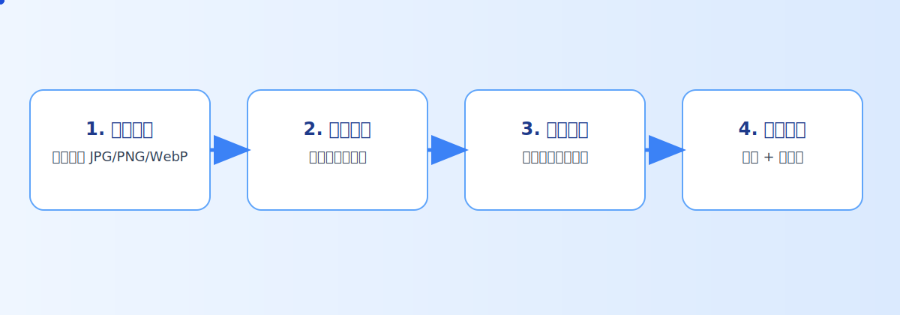
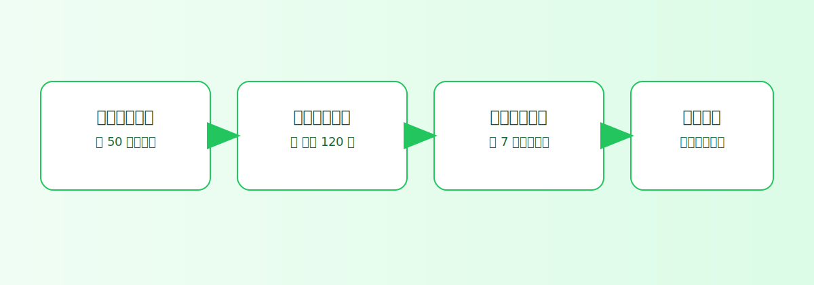
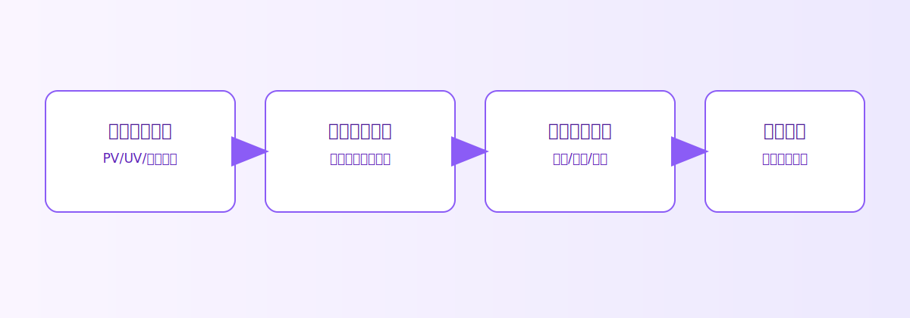

如何把一组图片分享得又快又稳（实操版）
很多人只是想把一组图片快速发出去：生成一个链接，再转成二维码给别人扫。麦瓜图床就是把这件事做得简单、直接，而且可控。
先记住这 4 个核心点
麦瓜图床（maiimg.com）主打的是“简单实用”：普通用户上传一组图片后，系统会生成分享链接，并可直接转成二维码。
- 一个链接最多可放 25 张图片
- 链接可转二维码，线上线下都能发
- 可设置链接/二维码的打开次数等规则
- 发出去后可一键失效，及时止损
四步跑通你的第一条分享流程
步骤1：上传图片
按主题分组上传，避免“一个链接里什么都有”。建议每组控制在同一场景，方便接收方快速理解。
按主题分组上传，避免“一个链接里什么都有”。建议每组控制在同一场景，方便接收方快速理解。
步骤2：设置访问规则
按敏感度设定查看次数、有效期、是否需要验证。先用“基础模板”，别一上来配太复杂。
按敏感度设定查看次数、有效期、是否需要验证。先用“基础模板”，别一上来配太复杂。
步骤3：生成链接或二维码
线上沟通用链接，线下物料/现场活动优先二维码。两者可以并行使用。
线上沟通用链接，线下物料/现场活动优先二维码。两者可以并行使用。
步骤4：发出去后做控制
根据实际情况随时调整打开次数，必要时直接一键失效，避免继续扩散。
根据实际情况随时调整打开次数，必要时直接一键失效，避免继续扩散。
一个实用建议：先在你最常用的场景里跑两周（例如“客户方案图”），形成团队统一习惯后再推广到更多场景。
流程图（直接可给团队看）
下面这三张图，适合直接放进内部培训文档：



常见错误（提前避坑）
- 所有图片都塞进一个链接：接收方看不懂重点
- 权限一刀切：要么太松，要么影响正常浏览
- 发完不复盘：错过了优化触达节奏的机会
你可以先从一个小场景开始：今天就用一组图片跑一次完整流程。
去麦瓜图床试一下